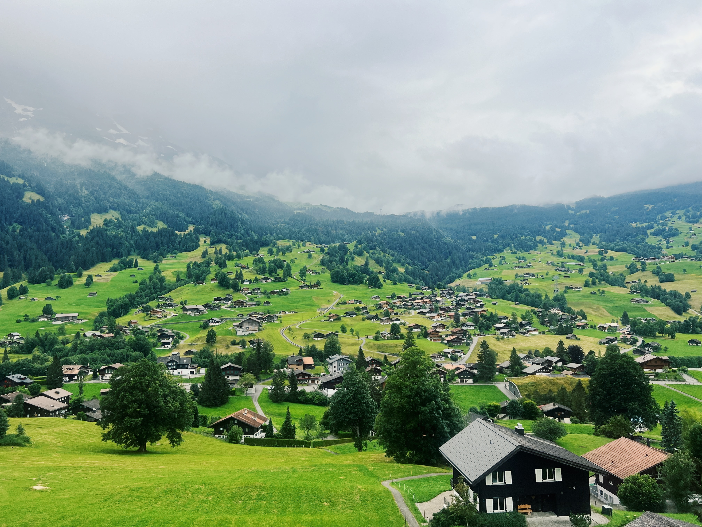
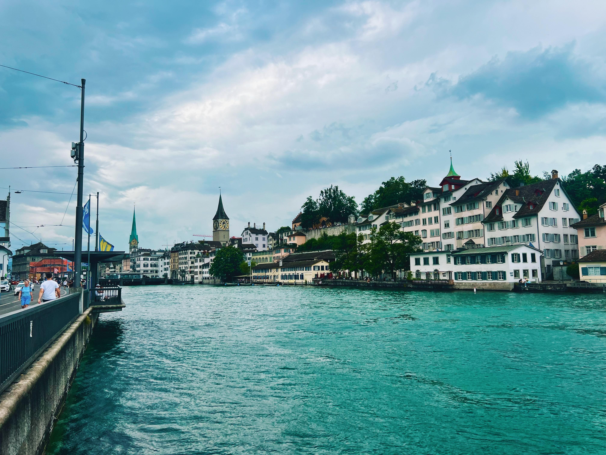
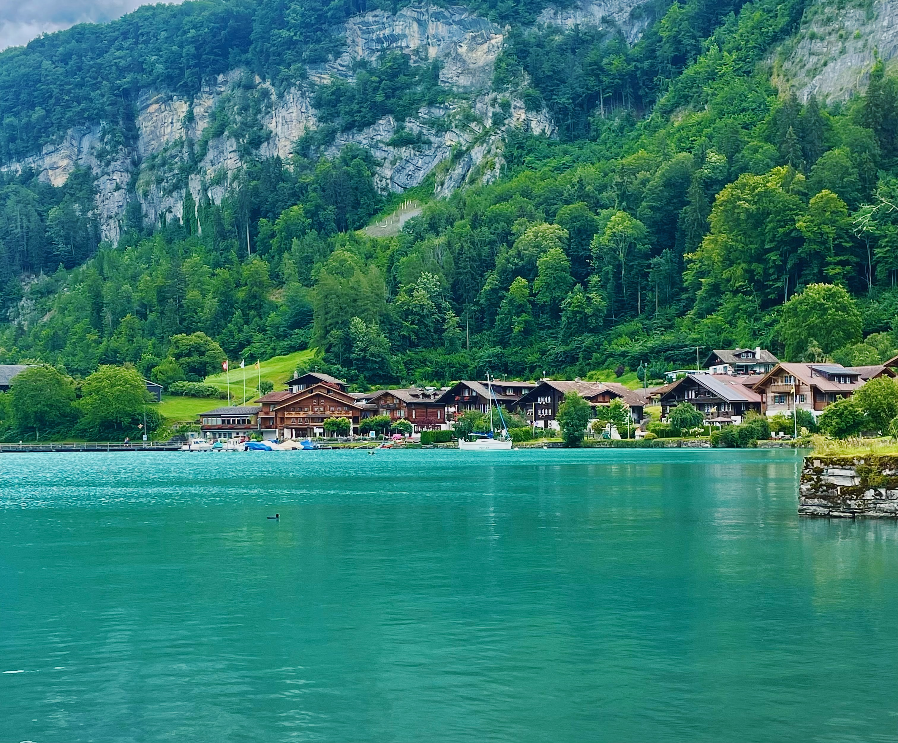

Switzerland Travel Guide
Switzerland is exactly what you imagine and somehow still manages to surprise you. Yes, the mountains are that dramatic. Yes, the trains run that precisely. Yes, it's that expensive. But beyond the efficiency and the sticker shock, there's a genuinely beautiful country with pristine alpine villages, stunning lakes, and infrastructure so good it feels like cheating. This is a place that works—sometimes too well, sometimes at the cost of spontaneity—but when you're standing in a valley surrounded by snow-capped peaks, none of that matters.
This is not a country for budget travelers or those seeking authentic local culture unspoiled by tourism. Switzerland knows what it is and leans into it. But if you accept the high costs and embrace the tourism infrastructure, you'll experience some of Europe's most spectacular scenery with Swiss efficiency making every connection, every excursion, every hotel check-in run smoothly. This guide covers the highlights: Zurich as your urban base, the Bernese Oberland for mountain drama, and Central Switzerland for folklore and tradition.


Zurich
Zurich is Switzerland's largest city and its financial heart—modern, efficient, and yes, expensive. Very expensive. A coffee costs CHF 5, a basic meal easily runs CHF 25-30, and hotel rooms start where most cities end. But beneath the pristine surface and designer storefronts, there's a genuinely livable city with a beautiful Old Town, a stunning lake, and public transport so reliable you could set your watch by it.
The city sits at the northwestern tip of Lake Zurich, surrounded by mountains, with the Limmat River running through its medieval center. It's wealthy, clean, and organized—the Switzerland you imagine, for better or worse. But it's also surprisingly compact and walkable, with summer swimming spots right in the city and excellent connections to the rest of the country. This is the perfect base for exploring Switzerland, assuming your budget can handle it.
Where to Stay in Zurich
Niederdorf in the Old Town (Altstadt) puts you in the heart of medieval Zurich. The pedestrian-only streets are lined with restaurants, bars, and cafes, and you're walking distance to everything. It's touristy but charming, especially in the evenings when locals fill the outdoor seating. Hotels here are expensive, but you'll save on transport.
Zurich West (Kreis 5) is the former industrial district turned hip neighborhood. This is where younger Zurich hangs out—street art, independent shops, restaurants worth seeking out. It's a 10-minute tram ride from the center but feels more authentic and slightly more affordable (relatively speaking).
Near the Hauptbahnhof (main train station) makes sense if you're using Zurich as a base for day trips. You'll sacrifice charm for convenience, but you can drop your bags and be on a train to Lucerne or the mountains within minutes. Budget hotels cluster around here—they're bland but functional.
What to Do
Explore the Old Town (Altstadt): Wander the narrow cobblestone streets along both sides of the Limmat River. The architecture dates back centuries, with church spires (Grossmünster and Fraumünster are the icons) dominating the skyline. It's small enough to cover in a morning but interesting enough to justify multiple passes.
Lake Zurich: In summer, the lake becomes the city's playground. The Seebad Enge and Strandbad Mythenquai are public swimming areas right on the lake—bring a towel, jump in, and lie on the wooden docks with everyone else. The lake promenade is perfect for walking or cycling, with views of the Alps on clear days.
Bahnhofstrasse: One of the world's most expensive shopping streets, running from the train station to the lake. Even if you're not buying anything, it's worth walking just to see the window displays and people-watch. Every luxury brand you can name has a storefront here.
Swiss National Museum: Right next to the Hauptbahnhof, this museum covers Swiss history from prehistoric times to the present. It's well-curated and gives context to everything you'll see in the country. Entry is CHF 10 (free on certain days—check their website).
Day trips: Zurich's real value is its location. Lucerne is 50 minutes by train, Bern is an hour, and mountain towns like Engelberg are easily doable as day trips. The Swiss Travel Pass makes these excursions economical if you're planning multiple trips. Even Jungfraujoch can be done in a very long day from here.
Where to Eat
Eating out in Zurich is painful for your wallet. A sit-down restaurant meal easily costs CHF 30-50 per person before drinks. Your best strategy is to eat lunch at restaurants (some offer lunch specials) and keep dinner light.
For budget meals: Hit up Coop or Migros supermarkets. Their prepared food sections have surprisingly good sandwiches, salads, and hot meals for CHF 10-15—a third of what you'd pay at a restaurant. Many locations have seating areas where you can eat.
For traditional Swiss food: Try Zeughauskeller for fondue and rösti in a historic armory building, or Raclette Stube for—you guessed it—raclette. These are tourist-friendly but authentic, with meals running CHF 30-40. Worth it once to say you had Swiss food in Switzerland.
For better value: Seek out the international restaurants in Kreis 5. Asian, Middle Eastern, and Italian spots offer better prices and often better food than generic Swiss restaurants. The Thursday and Saturday markets (Bürkliplatz) have food stalls that are cheaper than sit-down spots.

Bernese Oberland
This is what you came to Switzerland for. The Bernese Oberland is the iconic alpine region—dramatic peaks, green valleys, waterfalls tumbling from cliffs, and mountain villages that look like movie sets. It's touristy, expensive, and absolutely stunning. The infrastructure is excellent, the crowds are significant, and the scenery justifies all of it. Base yourself in Lauterbrunnen for value and authenticity, or Grindelwald if you want resort amenities and don't mind paying for them.
Lauterbrunnen
Lauterbrunnen is the valley that makes everyone stop and stare. A deep U-shaped valley with cliffs rising 300 meters on both sides, waterfalls tumbling from every direction, and tiny villages perched impossibly high on the valley walls. It's dramatic, beautiful, and surprisingly functional—this isn't a remote wilderness, it's a working alpine community with excellent infrastructure, good hotels, and train connections to everywhere you want to go in the region.
Where Grindelwald is the famous resort town, Lauterbrunnen is the quieter base—more affordable, less crowded, and arguably more scenic. The valley serves as the gateway to Mürren, Wengen, and Jungfraujoch, but it's worth staying here for the waterfalls alone.
The Waterfalls: Staubbach Falls is the icon—a 300-meter waterfall dropping straight down from the cliff edge into the village. You can walk right up to the base in about 10 minutes. Trümmelbach Falls are the hidden gem—waterfalls inside the mountain, accessed by tunnels and stairs. The sheer volume of water carving through solid rock is mesmerizing. Entry costs CHF 11 but it's genuinely impressive. Beyond these two, there are 70 other waterfalls scattered throughout the valley.
What to Do: The valley is hiking paradise. Trails range from easy valley floor walks to serious mountain routes. Walk from Lauterbrunnen to Stechelberg (45 minutes) for waterfall views. Take the cable car to Mürren for this car-free village on the cliff edge with spectacular views. Or ride the train to Wengen on the opposite side of the valley for another car-free alpine village with hiking trails.
Where to Stay: Lauterbrunnen is cheaper than Grindelwald with better access to regional highlights. Hotels in the village center run CHF 100-200 per night. Camping Jungfrau offers incredible views for budget travelers. Consider staying up in Mürren or Wengen for different atmospheres, though both are more expensive.

Grindelwald
Grindelwald is the postcard. The iconic Swiss mountain village with chalets scattered across green meadows, the Eiger North Face looming overhead, and hiking trails that lead to views you've seen in a thousand photos. It's touristy, yes—very touristy. But when you wake up to those mountains, when you step out of your hotel and see the scale of the peaks surrounding you, the crowds start to make sense.
This is the Bernese Oberland's most accessible mountain resort, which is both its strength and weakness. The infrastructure is flawless—gondolas, trains, hotels, restaurants—all operating with Swiss precision. But it comes at a cost, both literally (this place is expensive even by Swiss standards) and atmospherically (you're sharing those Instagram-worthy views with everyone else).
What to Do: Take the gondola to First for the Cliff Walk—a suspended metal platform jutting over the cliff edge with dramatic views across the valley. Summer brings excellent hiking, from the Eiger Trail offering close-up views of the North Face, to easier walks from Grindelwald to Kleine Scheidegg. The Pfingstegg cable car offers less-crowded viewpoints and an alpine coaster.
Where to Stay: Accommodation runs CHF 200-300+ per night in peak season. Stay in the village center for convenience, or uphill toward First or Männlichen for better views and quieter evenings. Consider staying in nearby Lauterbrunnen instead—it's cheaper, less touristy, and only 20 minutes away by train.
Where to Eat: Restaurants cater to tourists with prices to match—expect CHF 20-30 for basic meals, CHF 40-60 for sit-down restaurants. For traditional Swiss food, try C&M Cafe Bar or Restaurant Barry's. For better value, hit the Coop supermarket for prepared food at a third of restaurant prices.
Jungfraujoch
Let's be upfront: Jungfraujoch is expensive, touristy, and entirely artificial. The train ticket costs CHF 200+, you're sharing the experience with hundreds of other tourists, and everything up there is designed for mass tourism. This isn't a "real" alpine experience. It's Switzerland's most famous tourist attraction, and it feels like one.
That said, you're at 3,454 meters surrounded by glaciers and peaks, with views across the Aletsch Glacier—Europe's longest. On a clear day, the panorama is genuinely stunning. The train journey through the Eiger is impressive engineering. And despite the crowds, there's something undeniably special about standing on top of Europe.
The Reality Check: Full-price tickets from Interlaken cost around CHF 240 roundtrip. It's weather-dependent—check webcams before committing your money. If it's cloudy, you'll see nothing but white. Altitude sickness is real at 3,454m—take it slow, drink water, and descend if you feel unwell.
What to Do at the Top: Take the elevator to the Sphinx Observatory for panoramic views. Walk through the Ice Palace (kitschy but kids enjoy it). Head outside onto the snow plateau for closer glacier views. Bring warm layers—it's typically -5°C to -15°C even in summer. Most visitors spend 1-2 hours at the summit.
Is It Worth It? If you have money to spare and want a bucket-list experience, yes—the views on a clear day are extraordinary. If you're on a tight budget, skip it and spend that money on multi-day hikes in the region instead. Book tickets online in advance, go early (first trains around 6:30-7:00 AM), and obsessively check the weather forecast.
Iseltwald
Iseltwald is a tiny village on the southern shore of Lake Brienz that became Instagram-famous after appearing in the Netflix K-drama "Crash Landing on You." Before 2020, it was a quiet lakeside hamlet with a few dozen residents. Now it's overrun with tourists—mostly Korean drama fans—who come for selfies at the iconic pier and then leave. It's beautiful, yes, but it's also a one-hour-max visit unless you're staying overnight.
The reality: Iseltwald has one famous pier, one hotel (the Strand Hotel where the drama was filmed), a handful of houses, and stunning views across the turquoise waters of Lake Brienz to the mountains beyond. That's it. The village didn't ask for this fame, and locals are somewhat overwhelmed by the constant stream of visitors.
What to Know: It's very touristy now, with signs asking tourists to be respectful. The pier gets crowded during peak season when tour buses arrive. There's not much to do beyond walking to the pier, taking photos, and walking along the lake for 10-15 minutes. Combine it with other stops—don't make it the centerpiece of your day.
Getting There: About 15 minutes from Interlaken by car, or 30-40 minutes by bus (route 103). Alternatively, take a boat from Interlaken or Brienz across Lake Brienz. Go at sunrise or sunset for the best light and fewer crowds.
The Verdict: Beautiful but overhyped. If you're a K-drama fan, it's a pilgrimage worth making. If you're not, spend your time in Brienz or other stunning locations that haven't been Instagram-ified. Visit for 30-60 minutes, take your photos, and move on. Be respectful to the locals who have had their quiet village turned into a tourist attraction overnight.

Central Switzerland - Bürglen
Bürglen is a small village in the canton of Uri, known primarily as the legendary birthplace of William Tell—Switzerland's national hero who may or may not have actually existed. It's quiet, traditional, and very much off the tourist trail. Unless you're a Swiss history enthusiast or passing through on your way between Lucerne and the mountain passes, there's not much reason to make a special trip here. But if you want to see authentic Swiss village life without the crowds, this is it.
The village sits in a valley surrounded by mountains, about 15 minutes from Altdorf (the larger town where the famous William Tell statue stands). It's picturesque in an understated way—traditional Swiss houses, a pretty church, agricultural land, and mountain views. There are no Instagram hotspots, no luxury hotels, no tour buses. It's Switzerland as it actually is, not as the tourism board sells it.
The William Tell Connection: William Tell is Switzerland's legendary folk hero—the crossbow-wielding rebel who shot an apple off his son's head and sparked the rebellion against Austrian rule. He probably didn't exist, but Switzerland loves the legend anyway. The Tell Museum in Bürglen covers the legend, the historical context, and Tell's role in Swiss national identity. Entry is around CHF 7.
What to Do: Walk around the tiny village (20 minutes covers everything), visit St. Martin's Church, and drive to nearby Altdorf for the William Tell statue. The Uri region has several small traditional villages connected by scenic roads—pleasant for cycling or driving if you want to explore Swiss rural life.
Who Should Visit: You should visit if you're interested in Swiss history and folklore, want to see traditional village life without tourist crowds, you're driving between Lucerne and the Gotthard Pass, or you prefer quiet, authentic experiences over iconic sights. Skip it if you're on a tight schedule or want dramatic scenery.
Getting There: About 45 minutes from Lucerne by car, or by train via Altdorf (50 minutes, then short bus ride). Most visitors arrive by car as they're passing through. Accommodation is very limited—stay in Altdorf for better facilities.

Practical Information
Transportation: Switzerland's public transport is legendary. Trains, buses, boats, and cable cars all connect seamlessly with perfect timing. Buy a Swiss Travel Pass (3, 4, 8, or 15 days) for unlimited travel on most routes plus museum discounts. The pass doesn't cover mountain excursions fully but offers 25-50% discounts. Use the SBB app for real-time schedules and route planning—it works flawlessly.
Money: Switzerland uses Swiss Francs (CHF), not Euros. Cards are accepted everywhere, even for small purchases, so you barely need cash. Tipping isn't expected—service is included in your bill. ATMs are widely available if you need cash.
Language: Switzerland has four official languages depending on region: German (Swiss German), French, Italian, and Romansch. In the areas covered in this guide (Zurich, Bernese Oberland, Uri), German is spoken, but everyone speaks excellent English, especially in tourist areas. Basic German pleasantries are appreciated.
Cost: Be honest with yourself—Switzerland is one of Europe's most expensive countries. Budget at least CHF 100-150 per person per day for accommodation, food, and transport if you're traveling budget-conscious. Double that for comfort. Mountain excursions cost extra—Jungfraujoch alone is CHF 200+. The quality and efficiency match the prices, but the sticker shock is real.
Weather: Mountain weather changes fast. Bring layers, waterproof jacket, and check forecasts before committing to expensive excursions. If mountain webcams show clouds, reschedule—don't waste money on views you can't see. Summer (June-September) is best for hiking. Winter (December-March) is ski season—expensive and crowded but magical under snow.
Timing: Visit in late spring (May-June) when snowmelt makes waterfalls most dramatic, or summer (July-September) for hiking and warm weather. Avoid late April to early June when some mountain lifts close for maintenance. Peak season (July-August) sees massive crowds and highest prices. Shoulder season (June, September) offers better weather than you'd expect with fewer tourists.
Tourist Infrastructure: Accept that popular areas are touristy. The infrastructure is excellent, everything runs on time, and Swiss efficiency means even crowded attractions work smoothly. If you want untouched authenticity, Switzerland isn't your destination. But if you want spectacular scenery with reliable logistics, this is hard to beat.
Use Regional Bases: Don't try to see all of Switzerland in one trip. Base yourself in Zurich for urban exploration and day trips, Lauterbrunnen or Grindelwald for the Bernese Oberland, and Lucerne or nearby towns for Central Switzerland. The train connections make day trips easy, but you'll appreciate having a base to return to.
A Few of My Favorite Spots
- Staubbach Falls in Lauterbrunnen
- Trümmelbach Falls inside the mountain
- First Cliff Walk in Grindelwald for dramatic views
- Hiking trails with Eiger, Mönch, and Jungfrau views
- Mürren village and car-free alpine charm
- Jungfraujoch on a clear day (worth the cost)
- Old Town cobblestone streets in Zurich
- Lake Zurich swimming spots in summer
- Sphinx Observatory viewing platform at Jungfraujoch
- The famous pier at Iseltwald for photos
- Tell Museum in Bürglen for Swiss folklore
- Train journeys through alpine scenery